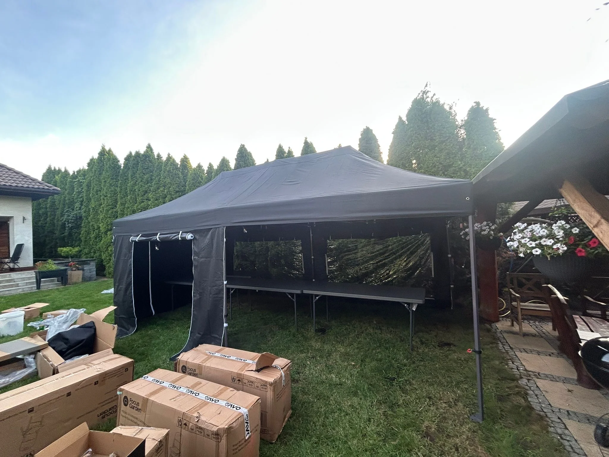

— nie pytamy przeciwko czemu. stowarzyszenie, sąsiedzi, grupa nieformalna. punkt informacyjny, zbiórka podpisów, zgromadzenie. dach nad tym co robisz. dosłownie.
Namiot przy proteście albo zgromadzeniu to nie luksus — to warunek. Bez niego nikt się nie zatrzyma, nikt nie podpisze petycji, nikt nie wysłucha. Pod dachem ludzie czują że to jest poważne, zorganizowane, nie przypadkowe.
Zgromadzenia publiczne, protesty stowarzyszeń, punkty informacyjne lokalnych inicjatyw, zbiórki podpisów pod petycjami. Akcje mieszkaniowe, środowiskowe, obywatelskie.
Ekspresowy namiot 4,5×3 lub 6×3 w 12-24h od telefonu. Odbierasz sam, sam stawiasz (2 osoby, 15 minut). Najczęściej nawet nie dowozimy — przyjeżdżasz do Jędrzejowa i zabierasz.
Punkt informacyjny pod urzędem, stolik z petycjami, 2-3 wolontariuszy pod dachem. Odbiór własny.
Więcej miejsca, możesz postawić stoły, ławki, mikrofon. Zgromadzenie z mikrofonem, prasa, przemówienia.
Piknik stowarzyszenia, integracja grupy, wiec z poczęstunkiem. My stawiamy i zwijamy.
Lokalne stowarzyszenie organizowało zgromadzenie pod gminą — zbieranie podpisów pod petycją. Październik, 5 stopni, prognoza deszczu na cały dzień. Zadzwonili w piątek wieczorem, zgromadzenie w sobotę rano. Namiot ekspres 4,5×3 — odebrali sami rano. "Patryk nie zapytał przeciwko czemu. Po prostu powiedział: 4,5×3 jest wolny, 250 zł, odbiorą sami. Zebraliśmy 200 podpisów mimo deszczu." 12h od pierwszego telefonu do postawionego namiotu.
Nie. Twoja sprawa, twoja odpowiedzialność. My stawiamy namioty — wy robicie politykę, ekologię, społeczeństwo. Nie oceniamy tematów, nie weryfikujemy petycji. Jedyne co sprawdzamy — czy namiot wolny i gdzie trzeba podjechać.
Tak — ale to nie nasza działka. Zgromadzenia publiczne wymagają zgłoszenia w urzędzie miasta/gminy (min. 6 dni przed). My namiot wynajmujemy legalnie, ale nie sprawdzamy czy wy macie pozwolenie. To twoja sprawa, twoja odpowiedzialność.
Najczęściej 12-24h od telefonu. W zeszłym roku zdarzyło się że ktoś dzwonił w czwartek po 18:00, w piątek rano odbierał namiot. Jak wolny — robimy. W sezonie letnim (wesela) czasem dłużej, jesień-zima — praktycznie zawsze od ręki.
Ekspresy popup wytrzymują do ~50 km/h. Przy silniejszym wietrze zwijamy — nie ma sensu rozbijać namiotu podczas protestu, gdy ludziom wali po głowie. Stabilizujemy obciążnikami (beton, woreczki z piaskiem). Z wiatrem powyżej 60 km/h nic nie da się zrobić — to fizyka.
— 12h na rezerwację. zadzwoń. odbierzesz sam jutro rano.
